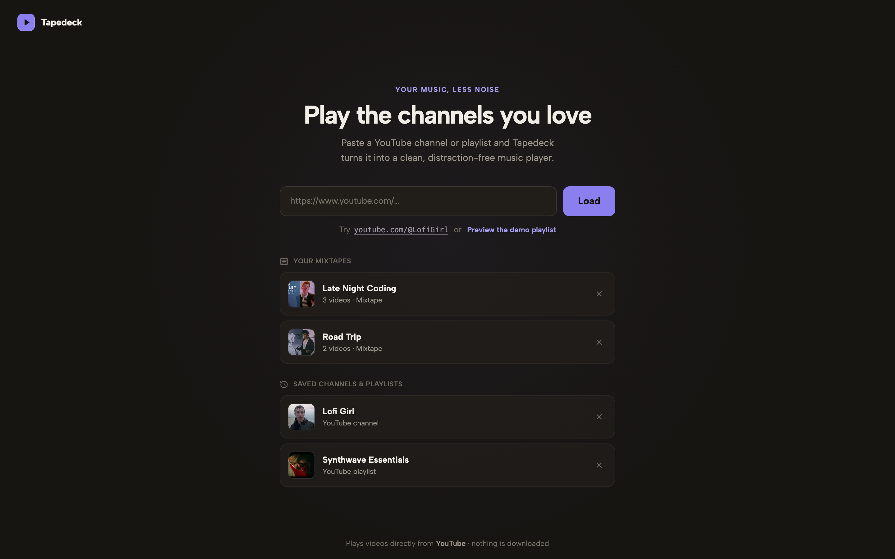

Desktop app · Free & open source
Tapedeck
Your queue, less noise.
Tapedeck is a free, open-source desktop application that turns YouTube channels, playlists, and YouTube Music links into a focused, distraction-free playback queue. Create mixtapes, save your library, and optionally synchronize it across devices using your private Google Drive app-data folder.

What is Tapedeck?
Tapedeck is a lightweight desktop application, developed and maintained by Melodic Development, designed for people who use YouTube as a music player. Instead of browsing YouTube with comments, recommendations, and endless distractions, Tapedeck lets you create a clean playback queue, organize your favorite sources into a personal library, build custom mixtapes, and control playback like a native desktop music player.
Paste a URL, get a queue
Channels, playlists, and YouTube Music links all resolve into a clean video queue.
Mixtapes
Build playlists from videos across any channels. Mixtapes are stored locally and can optionally synchronize across your devices using Tapedeck's private Google Drive app-data folder.
Real player controls
Shuffle, repeat, autoplay, and a queue that follows the playing track.
OS integration
Hardware media keys, Now Playing metadata, and background playback when the window is closed.
Library
Every source you load is saved for one-click replay.
Privacy-respecting
No separate Tapedeck account, no telemetry, and no advertising. Google Sign-In is used only to identify your Google account and optionally synchronize your Tapedeck library — see exactly how, below.